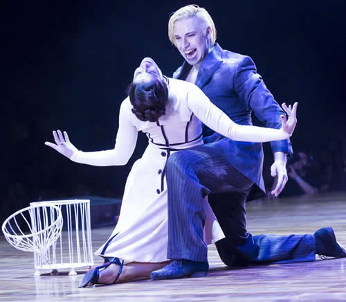

Real Chubut - Agencia de Noticias


Los excéntricos ganadores de la categoría Escenario del Mundial de Tango

Son Hugo Mastrolorenzo y Agustina Vignau: convencieron al jurado con su originalidad
Hugo Mastrolorenzo y Agustina Vignau son los bailarines que anoche se llevaron dos premios en uno: a la constancia y a la originalidad. Porque además de ser los ganadores de la categoría Escenario del Festival y Mundial Tango Buenos Aires, que terminó hace unas horas su edición 2016, consiguieron tanto la aprobación de los jurados como del público.
Son distintos. Y eso lo vienen demostrando desde 2011, cuando se anotaron por primera vez en el certamen. Sólo que esta vez lograron llegar adonde esta muchacha oriunda de San Miguel y este muchacho de Los Polvorines habían soñado.
"Cada año el trabajo se va notando y es cada vez más sólido. Pero creo que hubo también un cambio en la mirada del jurado hacia nosotros -dice Hugo-. Nos sentimos más amparados que otros años".
Y su socia completa: "Creo que Hugo, que es un gran coreógrafo, encontró la manera de poner los ingredientes de la manera más equilibrada en esta coreografía", dice antes de deshacerse en más elogios hacia su compañero.
Hugo y Agustina son una especie de freaks del Mundial de Tango. Desde su vestimenta hasta los accesorios (este año aparecieron con un globo rojo dentro de una jaula, para interpretar la "Balada para un loco", en una versión cantada por el Polaco Goyeneche). Parecía que todos los planetas se habían alineado. El mejor puntaje en la ronda semifinal, un jurado que comenzaba a entenderlos, el público que los ovacionaba y hasta Amelita Baltar, sentada en las primeras filas. (Amelita fue la que estrenó "Balada para un loco", de Piazzolla y Ferrer, en ese mismo escenario del Luna Park, en 1969, durante el Festival Iberoamericano de la Canción.)
"El Mundial siempre es un disparador para que podamos seguir en la búsqueda de lo que nos deja el tango. Qué nos quiso decir para que la danza no se quede en un movimiento vacío."
Hugo Mastrolorenzo
Pero, la verdad, no fueron las casualidades las que llevaron a Hugo y Agustina hasta ese primer premio. Los dos se dedican a la danza profesionalmente: ella comenzó por la clásica y la contemporánea; él por el folklore, hasta que canjeó lo festivo de sus danzas por la melancolía tanguera. "Yo soy así, dice Hugo, más tanguero".
Esta pareja no es la que demostró las mayores habilidades técnicas de destreza ni movimientos acrobáticos. Fue la que trabajó las ideas y supo expresarlas sobre el escenario, con la sofisticación del profesional y el alma del milonguero. Y eso se notó.
-¿Originalidad y perseverancia es lo que los trajo hasta acá?
Hugo Mastrolorenzo: -Creo que lo describís bien porque la perseverancia es un requisito fundamental en un ambiente donde nos han llegado a decir: ¿Cuántos años se piensan presentar a concursar? Como si fuese algo negativo el esfuerzo por insistir. Pero a nosotros nos pone en un lugar técnico y creativo de superación. Por el lado de la originalidad, esta gran zanahoria que es el Mundial, siempre es un disparador para que podamos seguir en la búsqueda de lo que nos deja el tango. Qué nos quiso decir para que la danza no se quede en un movimiento vacío.
-Y está claro que tanto en los concursos anteriores como en éste ustedes toman a la letra o el título de un tango como punto de partida.
Agustina Vignau: -En este caso, como conocemos la historia de la Balada [para un loco] . Bailarla en el Luna Park fue un momento sublime.
-¿Cómo fue ese camino que comenzaste en la danza clásica y la contemporánea hasta el tango?
Agustina Vignau: -Largo fue. Pero soy fiel seguidora de las creaciones de Hugo, desde que lo conozco, hace muchos años atrás. Tuve un montón de maestros pero conjugar una técnica de colocación clásica, lo que aprendés de la danza contemporánea y luego actoralmente en teatro, hasta poner todo eso en una coreografía de tango, es mérito exclusivo de Hugo como director. Es un trabajo de muchos años.